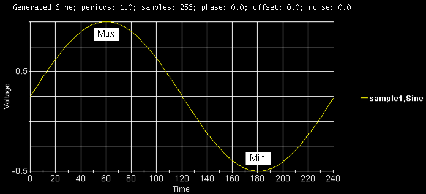

Label Trace
The Waveform Graphs Tool (WGT) allows users to label an arbitrary point of trace using the Data Display API. This function can make a trace more informative. The following shows a typical use case of this capability.

The Waveform Graphs Tool (WGT) allows users to label an arbitrary point of trace using the Data Display API. This function can make a trace more informative. The following shows a typical use case of this capability.
